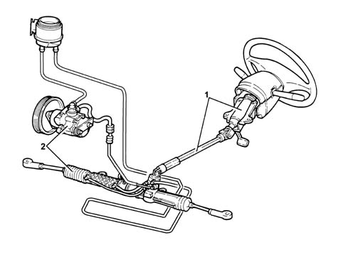

Introduction - STEERING
- Path
- Descriptions > 41 STEERING > Introduction - STEERING
- Kind
- system description
- Applies to
- all engines; all production periods
- Interactive page
- https://sloeber94.github.io/elrnDB-fMltpl/en/#/2892441
Applies to: all engines; all production periods
The steering system is the rack and pinion type with hydraulic power assistance.
It guarantees:
- lightness and easy handling of the steering in all operating conditions
- precision and safety at high speeds.
The steering column is collapsable and makes it possible to improve safety for the driver in the case of a frontal impact.
The steering wheel is height adjustable

1, Steering control and linkage 2, Power assisted steering